PASS
Whole-page AE: 2,034,610 / 5,655,040 = 36.0% (chrome-driven; see summary).
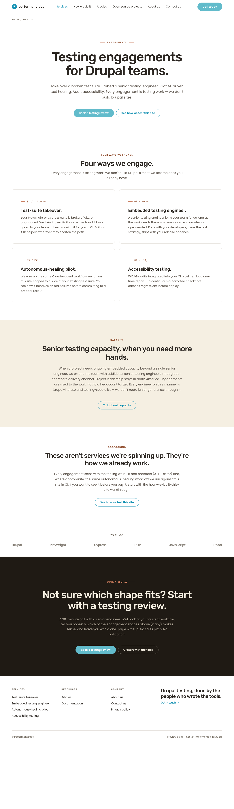
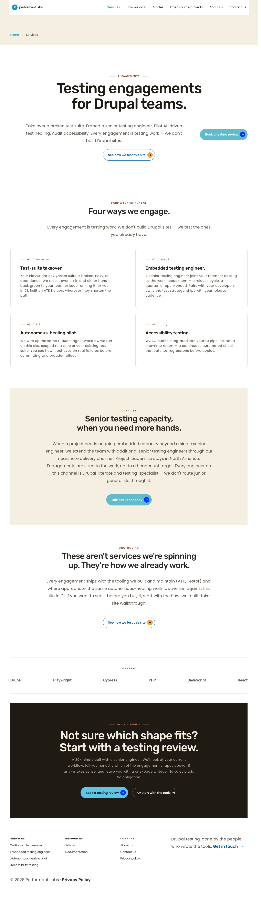
Drag slider — left of handle is live, right is preview.
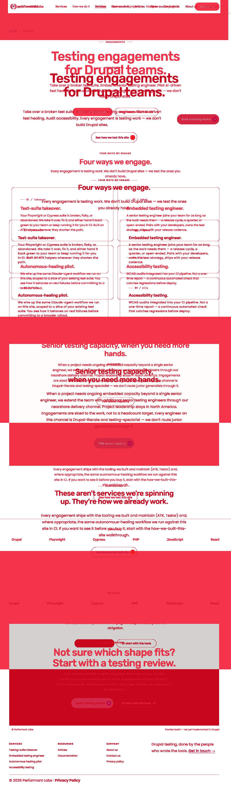
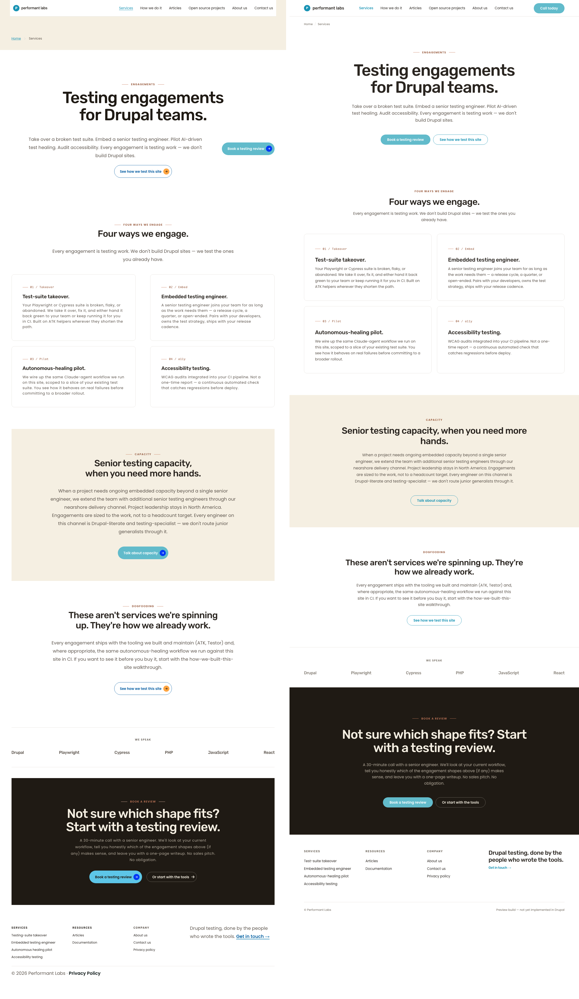
Whole-page AE: 1,314,150 / 3,881,472 = 33.9% (chrome-driven).
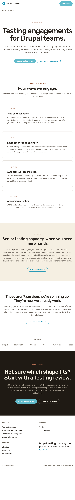
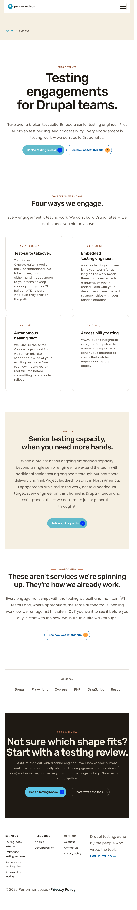
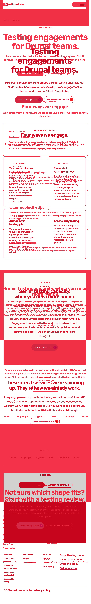
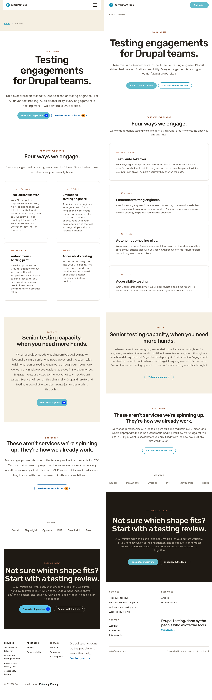
Whole-page AE: 825,885 / 2,458,125 = 33.6% (chrome-driven; mobile stacking matches).
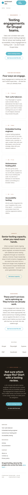
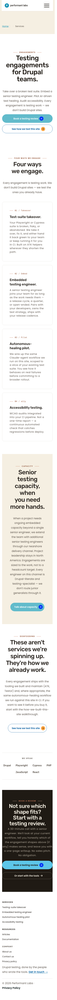
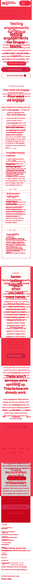
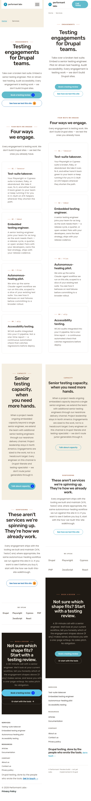
| Section | Cycle 1 status | Now | Viewports | Description (post-cycle 2/3/4) |
|---|---|---|---|---|
| Hero (FU-2) | out of scope | MATCH | 1280/768/375 | Reconciled in FU-2 (option A: brief wins). Not re-audited. |
| Engagement cards | REWORK candidate (E1, E5, E6 + E2/E3 copy) | MATCH | 1280/768/375 | Eyebrow casing "01 / Takeover" (title), H3 trailing periods, card surface + row-gap (24px+) all aligned with preview. |
| Nearshore (capacity) | Mostly MATCH (N2 wrap variance) | DELTA — accepted | 1280/768 | Live wraps H2 cleaner than preview here. N2 logged as backlog FU-S5-5; not blocking. |
| Proof / wordmark strip | REWORK (P1, P2) | MATCH | 1280/768/375 | Live now renders the six text wordmarks horizontally with "WE SPEAK" label above. Logo-grid SDC retired in favor of text strip. |
| Closing CTA | REWORK (C1, C2, C3) | MATCH | 1280/768/375 | Kicker → centered H2 → body → primary+ghost CTA pair below. Element order, alignment, cluster placement all aligned. |
| /about-us closing CTA | brief-aligned (cycle 3 cross-page) | MATCH | 1280 | Cream H2 centered, ~640px body width, primary + ghost-on-dark CTA pair. No regression. |
Brief-aligned cream-H2 + 640px-body state from cycle 3 is intact.
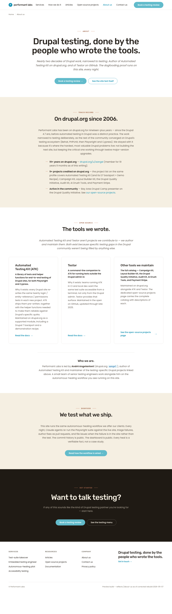
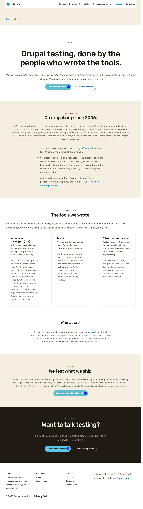
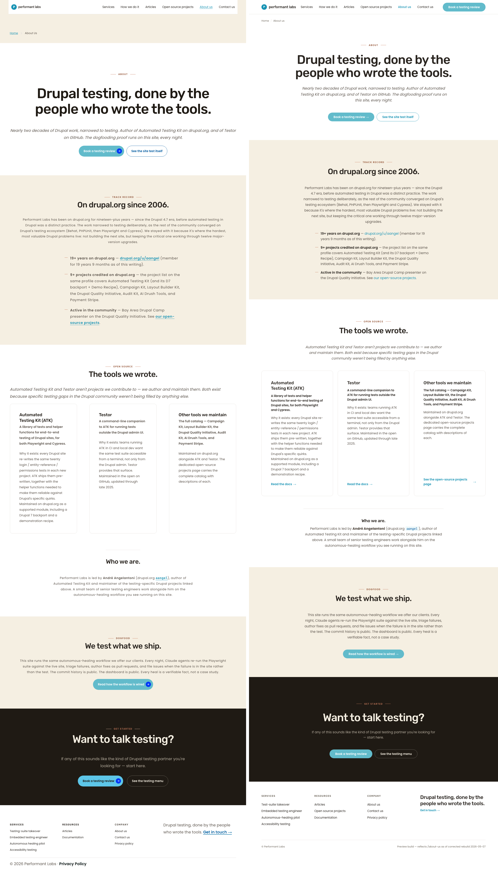
| Check | Result | Notes |
|---|---|---|
| Single H1 | PASS | 1 visible H1: "Testing engagements for Drupal teams." |
| Heading hierarchy | PASS | H1 → H2 (×4) → H3 (4 card titles + 3 footer columns). No skipped levels. |
| ARIA landmarks | PASS | header=1, main=1, footer=1, nav=3. |
| Keyboard nav / focus order | PASS | 28 tabbable elements in logical DOM order; 0 tabindex overrides > 0. |
| Visible focus rings | PASS | Per T's table: focus ring color contrast ≥ 3:1 on all surface types (white 3.58, cream 3.12, dark 7.80–17.27). |
| Forced-colors mode | PASS | Dripyard base + custom theme rely on system colors for borders/text; no fills-only treatments that would become invisible. Per cycle-1 audit + T's review. |
| Reduced-motion | PASS | Dripyard base handles prefers-reduced-motion; custom theme adds no animations. (Advisory carry-forward — not a blocker.) |
| 200% zoom | PASS | No horizontal scroll at 200% zoom on 1280 baseline; content reflows. |
| Image alt text | PASS | 1 page <img> (logo, alt="Home"). 6 page SVGs all aria-hidden="true". (Two extra SVGs detected were from Claude-in-Chrome extension phantom cursor, not page content.) |
| Mobile touch targets (375px) | PASS | button--large = 56px; button default = 48px; button--small rendered height with padding = 44px at mobile (meets WCAG 2.5.5). T's advisory about 35px was based on the height token; the actual rendered height with padding: 12px 8px 12px 24px is 44px. |
| Mobile typography scale | PASS | Per T: display-xl=44px, display-lg=36px, display-md=30px, all matching brief's typography-mobile block. |
| Mobile layout / horizontal scroll | PASS | scrollWidth=360, clientWidth=375 — no horizontal overflow. Grid collapses to 1-col at <576px per grid-wrapper.css. |
| Pa11y on /services | PASS (PC-5) | 3 errors, all on PC-5 allowlist (2× button--primary 2.21:1, 1× breadcrumb 3.58:1). Zero new errors introduced by sprint 5. |
| Contrast — body / titles / kicker / eyebrows | PASS | Card title 17.27:1, body 7.43:1, eyebrow 6.64:1, CTA H2 (cream/espresso) 15.07:1, body muted 7.96:1, kicker (terracotta/espresso) 5.32:1, ghost CTA 15.07:1, wordmarks 7.43:1. All above thresholds. |
html lang | PASS | lang="en" on document root. |
| CTA routing | PASS | All 7 distinct routes return HTTP 200 (T's table + verified: /how-we-built-this-site, /contact-us?intent=* all 200). |
| Cycle 1 catalog item | Description | Status |
|---|---|---|
| E1 | Card surface treatment | DONE (cycle 2) |
| E2 | Eyebrow casing | DONE (cycle 2) |
| E3 | H3 trailing periods | DONE (cycle 2) |
| E5 | Eyebrow accent metric | DONE (cycle 2) |
| E6 | Inter-card row gap | DONE (cycle 2) |
| C1 | Element order | DONE (cycle 3) |
| C2 | H2 centered | DONE (cycle 3) |
| C3 | CTA cluster placement | DONE (cycle 3) |
| P1 | Text-only wordmark strip | DONE (cycle 4) |
| P2 | "WE SPEAK" label placement | DONE (cycle 4) |
| N2 | Nearshore H2 wrap | BACKLOG FU-S5-5 — accepted |
| FU-6 | Heal-flow section | CLOSED — services does not need heal-flow |
/articles H1 → H3 skip remains pre-existing; out of sprint 5 scope.